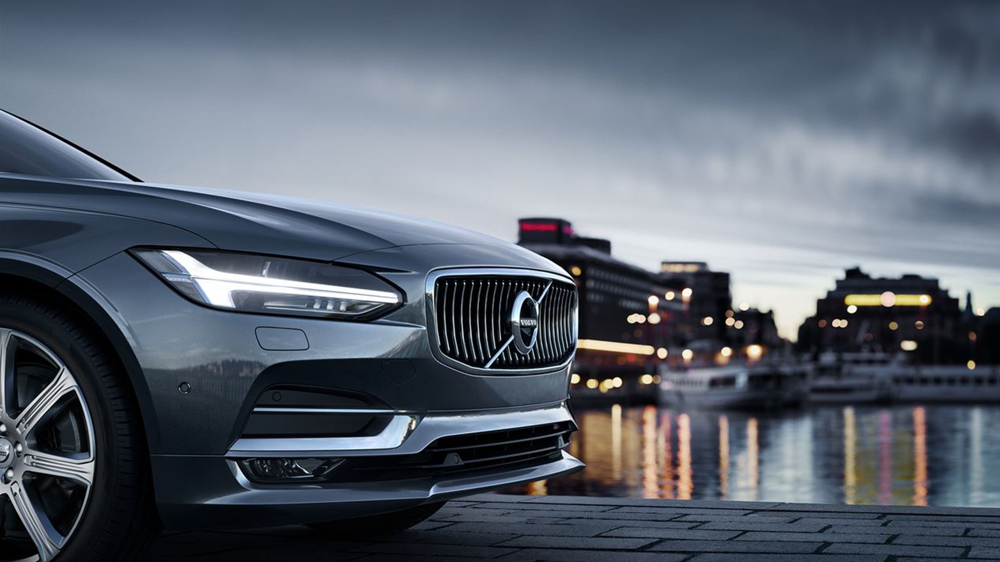
History
1927–1999
Volvo was founded upon the concept of safety in 1927, in Gothenburg, Sweden:Cars are driven by people. The guiding principle behind everything we make at Volvo, therefore, is and must remain, safety.
Assar Gabrielsson and Gustav Larson, 1927
The company was created as a subsidiary to SKF. Assar Gabrielsson was appointed managing director and Gustav Larson technical manager.
The trademark Volvo (which is Latin for 'I roll') was first registered by SKF on 11 May 1915 with the intention to use it for a special series of ball bearing for the American market but it was never used for this purpose (however in the application for the trademark, it was also designated for the purpose of automobiles).
The SKF trademark as it looks today was used instead for all the SKF-products. Some pre-series of Volvo-bearings stamped with the brand name 'Volvo' were manufactured but never released to the market, and it was not until 1927 that the trademark was used again, now as a trademark and company name for an automobile.
The first Volvo car left the assembly line on 14 April 1927, and was called Volvo ÖV 4. After this the young company produced closed top and cabriolet vehicles, which were designed to hold strong in the Swedish climate and terrain. In the registration application for Volvo logotype in 1927, they simply made a copy of the entire radiator for ÖV4, viewed from the front.
Presented in 1944 the Volvo PV444 passenger car only entered production in 1947.
It was the smallest Volvo yet and was to take the lion's share of Volvo production, as well as spearheading their move into the profitable American market. The first Volvos arrived in the United States in 1955, after hardware wholesaler Leo Hirsh began distributing cars in California. Later, Texas was added, and in 1956, Volvo themselves began importing cars to the US. North America has consistently provided Volvo with their main outlet since.
In 1963, Volvo opened the Volvo Halifax Assembly plant, the first assembly plant in the company's history outside of Sweden, in Halifax, Nova Scotia, Canada.In 1964, Volvo opened its Torslanda plant in Sweden, which currently is one of its largest production sites (chiefly large cars and SUVs). Then in 1965, the Ghent, Belgium plant was opened, which is the company's second largest production site.This was also Volvo's first location producing cars within the European Economic Community.In 1989, the Uddevalla plant in Sweden was opened, which was jointly operated by Volvo Car Corporation and Pininfarina Sverige AB from 2005 to 2013.
In the early 1970s, Volvo acquired the passenger car division of the Dutch company DAF, and marketed their small cars as Volvos before releasing the Dutch-built Volvo 340, which went on to be a big seller in the UK market in the 1980s. In 1986 Volvo sold 113,267 cars in the US marking a record year for the company. The appearance of Japanese brands like Acura and Lexus and the growing popularity of Subaru station wagons in subsequent years meant the loss of a significant market share for Volvo, one which they have never regained.
Volvo's long-time CEO Pehr G. Gyllenhammar saw early on that Volvo was too small to survive in the future, and attempted several times to merge with other manufacturers. Volvo nearly merged with Saab in the late seventies, while in 1978 an aborted affair would have seen the Norwegian state take over 40 percent of the company. In return, Volvo would receive 200 million SEK and a ten percent concession in the Oseberg oil field. Major institutional actors in Sweden opposed the deal and blocked it.A deal to merge with Renault was blocked in 1993, mainly opposed by a Swedish stockholders' association.
A collection of Volvo's most important historical vehicles are now housed in the Volvo Museum, which opened in a permanent location in Arendal at Hisingen on 30 May 1995. For several years, the collection had been housed at the Blue Hangar, at the then closed Torslanda Airport.
In 1999, Volvo Group decided to sell its automobile manufacturing business in order to concentrate on commercial vehicles, and to buy a 5% stake in Japanese automaker Mitsubishi Motors (with which Volvo Group along with the Dutch government had participated in a joint venture at the former DAF plant in Born, Netherlands since 1991). Ford saw advantages in acquiring a profitable prestige mid-size European automobile manufacturer, well renowned for its safety aspects, as an addition to its Premier Automotive Group. The buyout of Volvo Cars was announced on 28 January 1999,and in the following year the acquisition was completed at a price of US$6.45 billion. As a result of the divestiture, the Volvo trademark was used by two separate companies:
* Volvo Group – a manufacturer of trucks, buses and construction equipment (among others) owned by Swedish interests.
* Volvo Car Corporation or Volvo Cars – a manufacturer of automobiles owned by Ford Motor Company.
Volvo Group completed its 5% deal with Mitsubishi in November 1999, but sold its stake back to Mitsubishi Heavy Industries in March 2001.
Ford era, 1999–2010
- Volvo Car Corporation was part of Ford Motor Company's Premier Automotive Group (PAG), along with Jaguar, Aston Martin and Land Rover. While part of the PAG, the company significantly expanded its range of vehicles.
- After Ford sold Jaguar Land Rover to Tata Motors of India in 2008, the company initially decided to keep Volvo Cars despite mounting losses and major economic downturns. Ford decided to restructure plans for Volvo Cars, pushing it further upmarket, alongside the lower end of Mercedes and BMW sedans, wagons, and SUV crossovers. The outcome was the luxurious second generation Volvo S80 and the new small premium crossover Volvo XC60.
- When the global economic crisis of 2008 threatened the US automakers, Swedish authorities became concerned about the fate of Volvo, should Ford file for bankruptcy. These concerns mounted after repeated mass-layoffs at Volvo.
In December 2008, Ford announced that it was considering selling Volvo Cars. Initially, a sale price of US$6 billion was reported.[25] Ford said it was also looking into the possibility of spinning off Volvo as an independent company.
The Swedish government was asked to look into a possible state ownership of Volvo, or a financial bailout for Volvo Cars and SAAB of GM. Former parent AB Volvo agreed to help Volvo cut costs through partnerships, and suggested taking part in a shared ownership of Volvo Cars, as part of a larger consortium. Other rumored candidates to purchase Volvo Cars included BMW AG of Germany, Investor AB of Sweden, Chinese investors, and Russian investors.
- Although it was rumoured that Volkswagen would buy Volvo Cars, and despite initial denials, the company Geely Holding Group was ultimately selected to take over the Swedish automaker.Geely Group Holdings Co. allegedly bid about US$1.5 billion to take over Volvo, with Goldman Sachs investing HK$2.59 billion (US$334 million) in the holding company.
Geely era, 2010–present
- Ford Motor Company offered Volvo Cars for sale in December 2008, after suffering losses that year.On 28 October 2009, Ford confirmed that, after considering several offers, the preferred buyer of Volvo Cars was Geely Holding Group, the parent of motor manufacturer Geely Automobile.
On 23 December 2009, Ford confirmed the terms of the sale to Geely had been settled. A definitive agreement was signed on 28 March 2010, for $1.8 billion.
The European Commission and China's Ministry of Commerce approved the deal on 6 and 29 July 2010, respectively. The deal closed on 2 August 2010 with Geely paying $1.3 billion cash and a $200 million note. Further payments are expected with a later price "true-up".It is the largest overseas acquisition by a Chinese automaker.
- Stefan Jacoby, formerly chief executive of Volkswagen of America, became Volvo Car Corporation's president and chief executive on 16 August 2010, replacing Stephen Odell, who became chief executive of Ford Europe. Li Shufu became Volvo Cars' chairman of the board. His board members include vice-chairman Hans-Olov Olsson, a former president and chief executive of Volvo Cars, and Håkan Samuelsson, formerly chief executive of MAN.
- Under Geely ownership, Volvo has refocused its product lineup. The manufacturer has developed a new line of 3- and 4-cylinder diesel and petrol engines while eliminating larger engines. It has also developed a new vehicle platform, the Scalable Product Architecture (SPA), and re-introduced an expanded -90 series of models, including the S90 sedan and Volvo V90 wagon in addition to a redesigned XC90 SUV.
- In 2015, Volvo sold more than half a million cars for the first time in its 89-year history. Volvo reported strong sales from all three core global regions. Sales in Europe rose 10% in 2015 to 269k, representing over 50% of total global volume. Volvo's revival in the US gained momentum, with sales up 24% in 2015, while China was flat amid a challenging sales environment, but sales were up 11% in the fourth quarter.
- In July 2017, the automaker announced that beginning in 2019, all of its new models will include an electric motor in their powertrain. Implementation of the announcement could mean Volvo becoming the first manufacturer to end production of internal combustion-only vehicles, with all vehicles hybrid or electric powered. Between 2019 and 2021, Volvo plans to launch three electric cars under the Volvo brand and two more under the Polestar performance brand.
- Volvo is one of the proponents of autonomous vehicles. On 20 November 2017, Uber announced that it planned to buy up to 24,000 Volvo cars designed to accept autonomous technology between 2019 and 2021. This non-binding intent includes a plan for Uber Advanced Technologies Group to design and build the self-driving system in the XC90 SUV.In 2016, the companies announced that they planned to collaborate on the design and financing of cars with self-driving systems. Such vehicles require a different type of steering and braking mechanism, as well as sensors. The CEO of Volvo Cars, Håkan Samuelsson, made this comment in an interview: "We get support developing this car ... It’s also a big commercial deal.
- Also in 2017, Volvo announced a vehicle subscription offering called Care by Volvo, which offers the Volvo XC40 for a monthly payment that includes insurance and maintenance. Care by Volvo is offered in several European markets, such as Germany, the UK and Italy, as well as in the U.S.
- In February 2020, Volvo and Geely announced that they have started formal discussions about a merger of business. Geely had owned 100% of Volvo, but Volvo Cars had largely been allowed autonomy with its resources.These merger talks were later halted, and 18% of Volvo Cars shares were listed on the Nasdaq Stockholm stock exchange in October 2021.
- In early 2021 the company announced plans to completely stop selling fossil fuel-based cars by 2030, switching to electric-powered cars. The plan includes phasing out fossil-fuel-only cars by 2025, manufacturing only electric cars or hybrids.
- In 2021, Volvo Cars set up a joint venture with Geely for its hybrid engine operations.The new business, Aurobay will develop and market powertrain solutions, and as of 2022, includes Volvo Cars' engine plants in Skövde and Zhangjiakou, together with its powertrain research and development operations in Gothenburg.
Volvo Cars
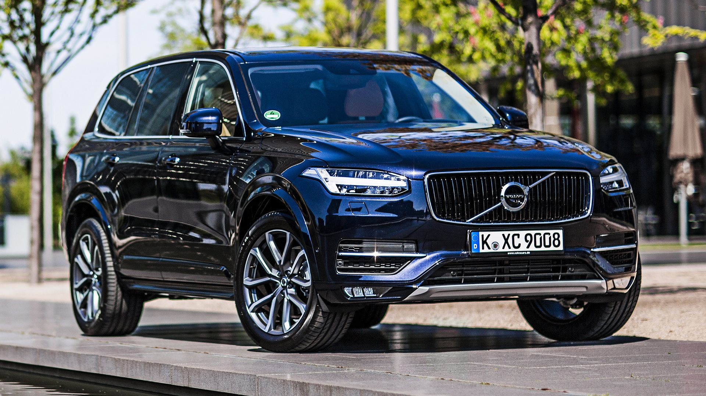
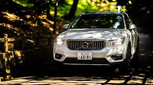
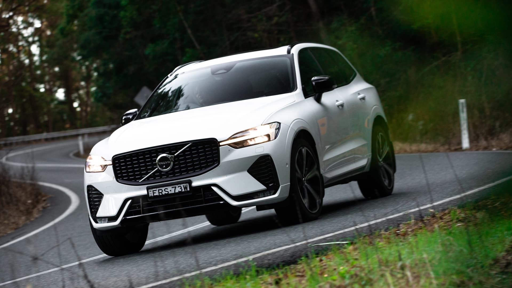
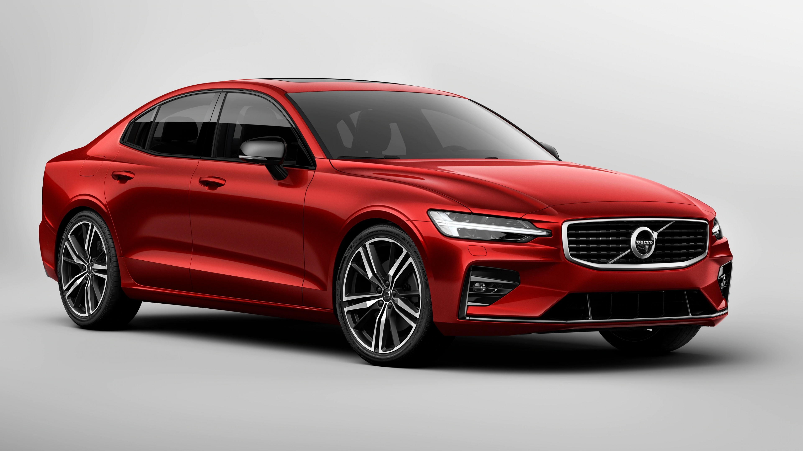
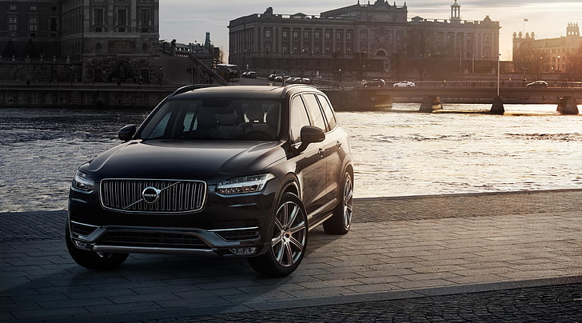
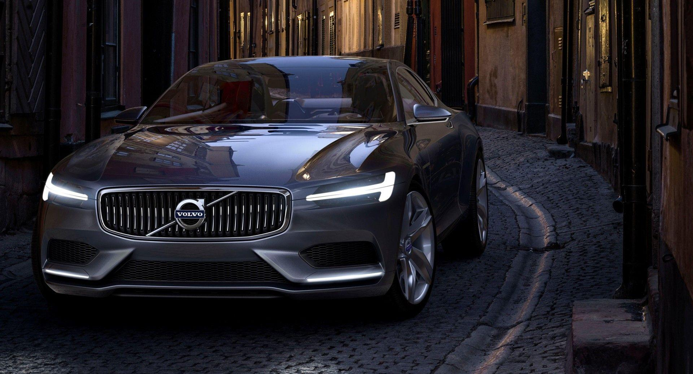
Car models
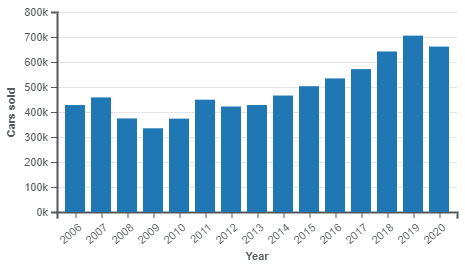
Early years
- Volvo ÖV 4, a.k.a. Jakob
- Volvo PV650 Series
- Volvo TR670 Series
- Volvo PV 36 Carioca
- Volvo PV51
- Volvo PV800 Series (civilian (PV801, PV802, PV810, PV821, PV822 and PV831) and military (TP21/P2104, P2104))
- Volvo PV 60
- Volvo PV444/544
- Volvo PV544
- Volvo Duett (Volvo PV445, P210)
- Volvo P1900
- Volvo Amazon/Volvo 122
- Volvo P1800
- Volvo 66
- Volvo C202
- Volvo C3-series (C303, C304 and C306)
Tri-digit nomenclature
- Starting with the 140 series in 1966, Volvo used a tri-digit system for their cars.
The first number was the series, the second number the number of cylinders and the third number the number of doors; so a 164 was a 1-series with a six-cylinder engine and four doors.
However, there were exceptions to this rule – the 780 for example, came with turbocharged I4 and naturally aspirated V6 petrol engines and I6 diesel engines, but never an eight-cylinder, as the "eight" would suggest.
Similarly, the 760 often was equipped with a turbocharged I4 engine, and the Volvo 360 only had four cylinders. Some 240GLT had a V6 engine. The company dropped the meaning of the final digit for later cars like the 740, but the digit continued to identify cars underhood on the identification plate.
- Volvo 140 (Volvo 142, Volvo 144, Volvo 145)
- Volvo 164
- Volvo 240 (Volvo 242, 244, 245)
- Volvo 260 (Volvo 262C, 264, 265)
- Volvo 340 (Volvo 343, 345)
- Volvo 360
- Volvo 440/460
- Volvo 480
- Volvo 740
- Volvo 760
- Volvo 780
- Volvo 850
- Volvo 940
- Volvo 960
Post tri-digit models
- Released in 1995
Volvo S40 /
Volvo V40
- Released in 1996
Volvo S70 replaced the 850 saloon/
Volvo V70 replaced the 850 estate/
Volvo S90 replaced the 960 saloon/
Volvo V90 replaced the 960 estate
- Released in 1997
Volvo C70 coupé/
Volvo V70 XC
- Released in 1998
Volvo C70 convertible/
Volvo S80 replaced the Volvo S90
- Released in 2000
Volvo S60 replaced the Volvo S70/
Volvo V70 II/
Volvo V70 XC II/XC70
- Released in 2002
Volvo XC90
- Released in 2004
Volvo S40 II replaced the Volvo S40/
Volvo V50 replaced the Volvo V40
- Released in 2006
Volvo C30/
Volvo C70 II/
Volvo S80 II
- Released in 2007
Volvo V70 III/
Volvo XC70 II
- Released in 2008
Volvo XC60
- Released in 2010
Volvo S60 II replaced the Volvo S60/
Volvo V60 replaced the Volvo V50
- Released in 2012
Volvo V40 II replaced both the Volvo S40 II and Volvo V50
- Released in 2014
Volvo XC Classic
Volvo XC90 II replaced the Volvo XC90
- Released in 2016
Volvo S90 replaced the Volvo S80 II/
Volvo V90 replaced both the Volvo V70 III and Volvo XC70 II
- Released in 2017
Volvo XC60 II replaced the Volvo XC60/
Volvo XC40
- Released in 2018
Volvo V60 II replaced the Volvo V60
Current models
- Today, the company uses a system of letters denoting body style followed by the series number.
"S" stands for "sedan", "C" stands for "coupé" or "convertible" (including three-door hatchback AKA "shooting brake") and "V" stands for "versatile" (5-door hatchback and station wagon).
A V50 is an estate (also under "V") that is smaller than the V70. "XC" stands for "cross country" originally added to a more rugged V70 model as the V70XC and indicates all wheel drive paired with a raised suspension to give it an SUV look.
Volvo would later change the name to the "XC70" in keeping with its car naming consistent with the XC90.
- Originally, Volvo was planning a different naming scheme.
S and C were to be the same, but "F", standing for "flexibility", was to be used on station wagons.
When Volvo introduced the first generation S40 and V40 in 1995, they were announced as the S4 and F4.
However, Audi complained that it had inherent rights to the S4 name, since it names its sporty vehicles "S", and the yet to be introduced sport version of the Audi A4 would have the S4 name.
Volvo agreed to add a second digit, so the vehicles became the S40 and F40. However, that led to another complaint from Ferrari, who used the Ferrari F40 name on their legendary sports car. This led to Volvo switching the "F" to "V", for versatile.
Large cars (SPA platform)
* Volvo XC90 II 2014–present (M/Y 2015–present)
* Volvo S90 II 2016–present (M/Y 2017–present)
* Volvo V90 II 2016–present (M/Y 2017–present)
* Volvo V90 Cross Country 2016–present (M/Y 2017–present)
* Volvo XC60 II 2017–present (M/Y 2018–present)
* Volvo S60 III 2018–present (M/Y 2018–present)
* Volvo V60 II 2018–present (M/Y 2019–present)
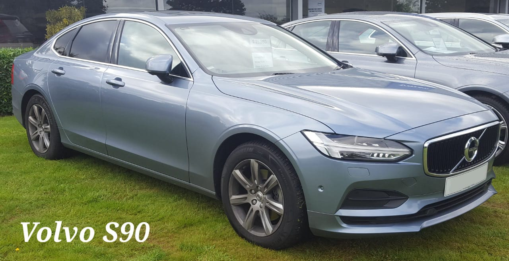
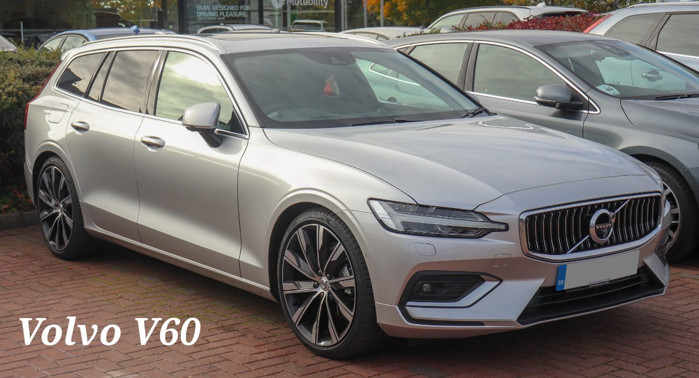
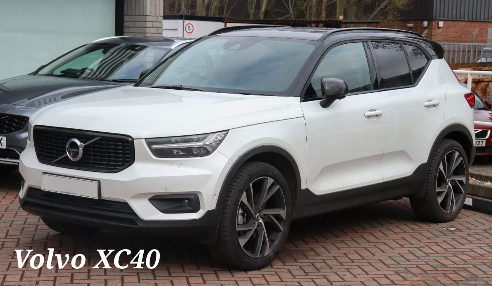
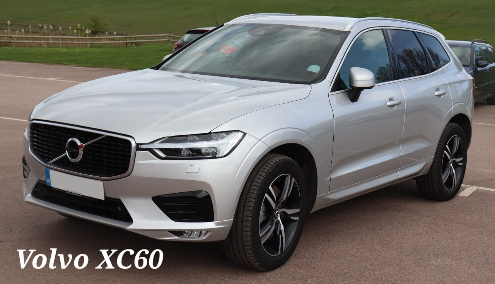
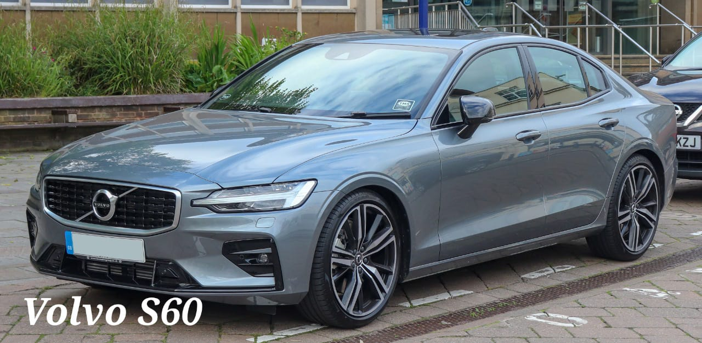
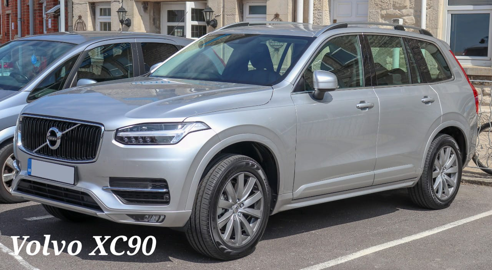
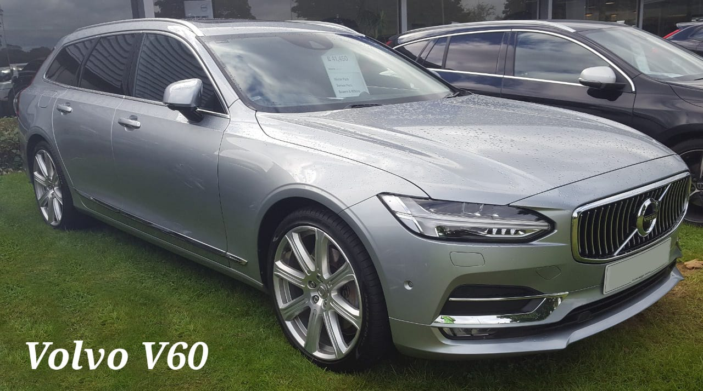
Future models
- Medium cars (CMA platform)
*Volvo C40[98] 2022–future
- Large cars (SPA platform)
*Volvo XC100[99] 2023-future
*Volvo Embla 2023-future
Concept cars
- Volvo Venus Bilo (1933)
- Volvo Philip (1952)
- Volvo Margarete Rose (1953)
- Volvo Elisabeth I (1953)
- Volvo GTZ (1969)
- Volvo GTZ 3000 (1970)
- Volvo VESC (1972)
- Volvo 1800 ESC (1972)
- Volvo EC (1977)
- Volvo City Taxi (1977)
- Volvo Tundra (1979)
- Volvo VCC – Volvo Concept Car (1980)
- Volvo LCP2000 (1983)
- Volvo ECC – Environment Concept Car (1992)
- Volvo ACC – Adventure Concept Car (1997)
- Volvo SCC – Safety Concept Car (2001)
- Volvo PCC – Performance Concept Car (2001)
- Volvo PCC2 (2002)
- Volvo ACC2 (2002)
- Volvo VCC – Versatility Concept Car (2003)
- Volvo YCC – Your Concept Car (2004)
- Volvo T6 (2005)
- Volvo 3CC (2005)
- Volvo C30 Design Concept (2006)
- Volvo XC60 Concept (2006)
- Volvo ReCharge Concept (2007)
- Volvo S60 Concept (2008)
- C30 DRIVe Electric (2010)
- Volvo Universe Concept (2011)
- Volvo Concept You (2011)
- Volvo Concept Coupe (2013)
- Volvo Concept Estate (2014)
- Volvo Concept XC Coupe (2014)
- Volvo 40.1 (2016)
- Volvo 40.2 (2016)
- Volvo 360c (2018)
- Volvo Concept Recharge (2021)
Alternative propulsion
- In 2019, Volvo announced that it plans to produce only fully electrified cars from the year 2040 onwards. From 2040, it plans to no longer produce internal combustion engine powered vehicles.In March 2021, Volvo doubled down on these plans and committed to being an electric-only car maker by 2030.
01 - Flexible-fuel vehicles -
In 2005, Volvo introduced to the Swedish market the company's first E85 flexifuel models.Volvo introduced its S40 and V50 with flexible-fuel engines, joined in late 2006 by the then new C30.All Volvo models were initially restricted to the Swedish market, until 2007, when these three models were launched in eight new European markets.In 2008, Volvo launched the V70 with a 2.5-litre turbocharged flexifuel engine.
02 - Plug-in hybrids -
The Volvo ReCharge is a plug-in hybrid concept car with an all-electric range (AER) of 60 miles (97 km). It was officially unveiled at the 2007 Frankfurt Auto Show.
On 1 June 2009, Volvo announced the launching of series production diesel-electric plug-in hybrids by 2012.The company plans to sell a series hybrid with the goal of achieving emissions of less than 50 grams of CO2 per kilometer.As part of a joint venture with Vattenfall, a Swedish energy company, Volvo converted two Volvo V70 to plug-in hybrid demonstrators that have been in field testing in Göteborg, Sweden since December 2009.Vattenfall offered customers participating in this trial the supply of renewable electricity generated from wind power or hydropower.Among other challenges, this test has allowed to experience the all-electric range at low temperatures, which has been a disadvantage of plug-in vehicles.
03 - Electric car -
The Volvo C30 DRIVe Electric concept car was exhibited at the 2010 Paris Motor Show and Volvo announced that field testing will begin in 2011, in the US, Europe, and China.The C30 DRIVe electric car has a lithium-ion battery, a top speed of 130 km/h (81 mph), and an all-electric range of up to 150 kilometres (93 mi). Field testing began in 2010 with 10 units in Göteborg, Sweden.
04 - Gas-turbine Hybrid -
The Volvo ECC (Environmental Concept Car) was exhibited at the 1992 Paris Motor Show. The vehicles range on batteries alone was 90 miles (140 km), and when combined with a full tank of fuel for the turbine, about 415 miles (668 km).
05 - Drive-E engines -
Starting in the 2015 model year (Volvo S60, V60, and XC60), Volvo introduced a line of forced-induction four-cylinder engines, dubbed "Drive-E",to increase the efficiency of their models without sacrificing performance. These engines also debuted throughout the lineup that year, and also appeared in the second-generation Volvo XC90. Hybridized versions of these engines would, in theory, have enough power to match eight-cylinder engines.
Production locations
01 - Sweden
* Torslanda (Volvo Cars Torslanda – Torslandaverken) 1964–present
Volvo V60, Volvo XC60, Volvo V90, Volvo XC90
* Olofström (body components)
* Skövde (engines)
* Floby (engine components, brake discs)
02 -Belgium
* Ghent (Volvo Car Gent) 1965–present
Volvo XC40, Volvo S60, Volvo V60
03 -China
* Chengdu (Zhongjia Automobile Manufacturing) 2013–present
Volvo S60L, Volvo XC60
* Daqing (Daqing Volvo Car Manufacturing) 2014–present
Volvo S90, Volvo S90L
* Luqiao (Zhejiang Geely Manufacturing) 2016–present
Volvo XC40
* Zhangjiakou (engines)
04 -Malaysia
* Shah Alam (Volvo Car Manufacturing Malaysia) 1967–present
Volvo S60, Volvo S90, Volvo V60, Volvo XC40, Volvo XC60, Volvo XC90
05- India
*Bangalore (Volvo Auto India) 2017–present
Volvo S90, Volvo XC60, Volvo XC90
06- United States
*Ridgeville, South Carolina (Volvo Car North America) 2018–present
Volvo S60
Motorsport
- In 1959, Volvo had set up its own motorsport department. This led to Volvo enjoying worldwide success in the motorsport arena throughout the early 1960s. In 1961, Gran Premio de Argentina Gunnar Andersson was appointed Volvo's competition department manager, signing a number of drivers, including Carl-Magnus Skogh, Tom Trana and Ewy Rosqvist, though he himself still continued to compete in rallies. In 1964, Volvo made heavy investments in the Safari Rally, entering four Volvo PV544s in the 1964 competition. A PV544, borrowed from Volvo and then modified and driven by Joginder and Jaswant Singh won the Safari Rally in 1965.
- Volvo entered the European Touring Car Championship with the Volvo 240 Turbo in the 1980s. In the 1984 European Touring Car Championship, the Swedish team Sportpromotion won the EG Trophy at Zolder circuit, followed by placing second in the Mugello. In 1985, Volvo signed Swiss engine guru Ruedi Eggenberger to run its works team through Eggenberger Motorsport. Team drivers Gianfranco Brancatelli and Thomas Lindström led the 240T to victory in the 1985 ETCC.
- Also in 1985, New Zealander Mark Petch had purchased a 240T from the Magnum team in Sweden (and claimed to run the only privateer Volvo 240T outside of Europe), and drivers Robbie Francevic and Michel Delcourt had also won the Wellington 500 street race in New Zealand in January. Francevic went on to finish 5th in the 1985 Australian Touring Car Championship, taking wins at Symmons Plains and Oran Park. The factory-supported Petch team also participated in the 1985 Bathurst 1000. Thomas Lindström later joined Francevic to win the 1986 Wellington 500. The Petch team become the Volvo Dealer Team in 1986, and expanded to two cars, with the other being for John Bowe, who had driven the Volvo with Francevic at the 1985 Bathurst 1000.
- Volvo contracted Belgian based team RAS Sport to be its works team in the ETCC in 1986, following Eggenberger moving to race Ford Sierra's. This team included defending champion Lindström, joined by ex-Formula One and Grand Prix motorcycle racer Johnny Cecotto, as well as Ulf Granberg and Anders Olofsson. The team took wins at wins at Hockenheim, Anderstorp, Brno, Österreichring and Zolder, though the wins at Anderstorp and the Österreichring were disqualified due to the use of illegal fuel.
- The 240T also entered the Guia Race, part of the Macau Grand Prix in 1985, 1986 and 1987, winning in both 1985 and 1986.
- Volvo also saw success in the Deutsche Tourenwagen Meisterschaft (German Touring Car Championship), with a 240 Turbo driven by Per Stureson winning the 1985 DTM.
- Volvo also entered the British Touring Car Championship in the 1990s with Tom Walkinshaw Racing. This partnership was responsible for the controversial 850 Estate racing cars, driven by Rickard Rydell and Jan Lammers and with a best qualifying placing of third and a best race finish of fifth, which was only rendered uncompetitive when the FIA allowed the use of aerodynamic aids in 1995. TWR then built and ran the works 850 Saloon, with six wins in 1995, and five wins in 1996, and a S40, with one win in 1997 in the BTCC, as well as Volvo placing third in the Manufacturers Championship, both in 1995 and 1996. In 1998, TWR Volvo won the British Touring Car Championship with Rickard Rydell driving the S40R.
- Volvo also competed in the Super Touring category with the 850 across Europe and in Australia. Australian race car driver Peter Brock drove an 850 T5 with Tony Scott in the 1994 James Hardie 12 Hour production car race at Bathurst, finishing 25th. He also drove an 850 saloon in the 1996 Australian Super Touring Championship, placing sixth in the Drivers’ Championship.
- Volvo regularly entered the S60 in the Swedish Touring Car Championship, where it finished 2nd in the drivers' championship twice and won the manufacturers' title once. The S60 continued to be raced after the formation of the Scandinavian Touring Car Championship, a merger of the Swedish and Danish touring car championships. Thed Björk won three consecutive titles from 2013 to 2015, driving an S60 prepared by Polestar Racing.
- From 2002 to 2007, there was an S60 one-make racing series as a support series to the Swedish Touring Car Championship known as the S60 Challenge Cup, using 26 factory-modified S60s.
- An S60 was driven by Robert Dahlgren in the Swedish round of the 2007 World Touring Car Championship.
- The first generation S60 made its competitive debut in 2006, racing in the Speed World Challenge GT class. The second-generation model was introduced for the 2009 season. In 2010, its programme was expanded to include the SCAA Pro Racing World Challenge, where it won both the drivers' and manufacturers' championships in the GT class. The programme was expanded again in 2011, to include the Pirelli World Challenge.
- In 2008, Volvo entered the Swedish Touring Car Championship with a C30 powered by bioethanol E85 fuel. Robert Dahlgren and Tommy Rustad were the drivers, finishing 5th and 10th respectively in the championship. Volvo had also signalled their intentions to enter the 2009 British Touring Car Championship with the same car.
- Volvo entered the V8 Supercars Championship with two S60s in 2014 with Garry Rogers Motorsport, and were immediately competitive.Following ten pole positions and four race wins, Scott McLaughlin finished fifth in the championship and was awarded the Barry Sheene Medal.
classic cars
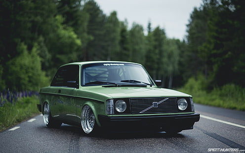
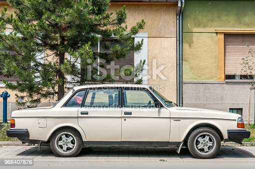
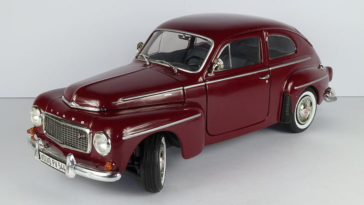
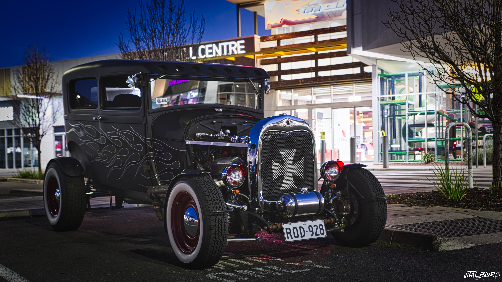
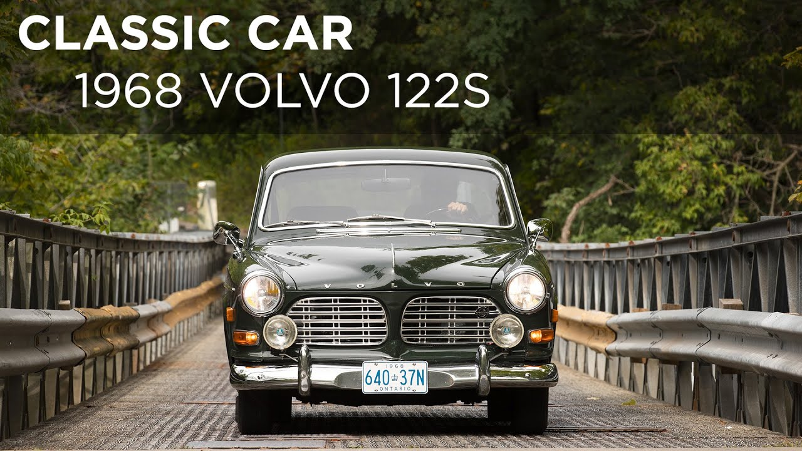
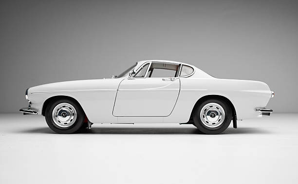
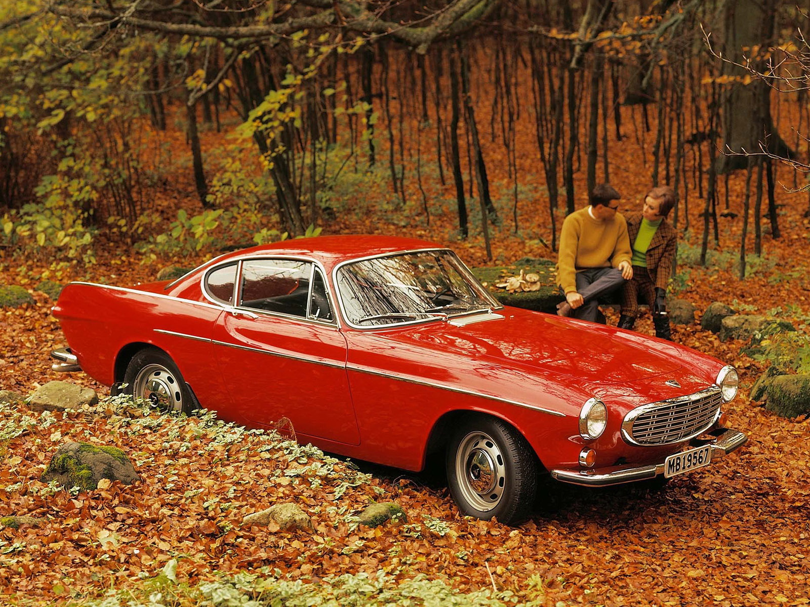
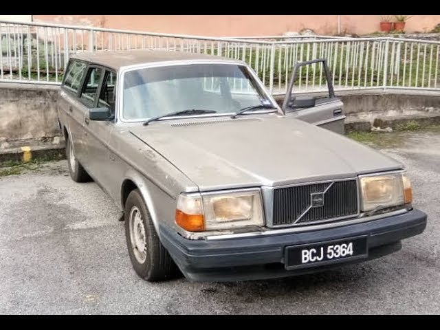
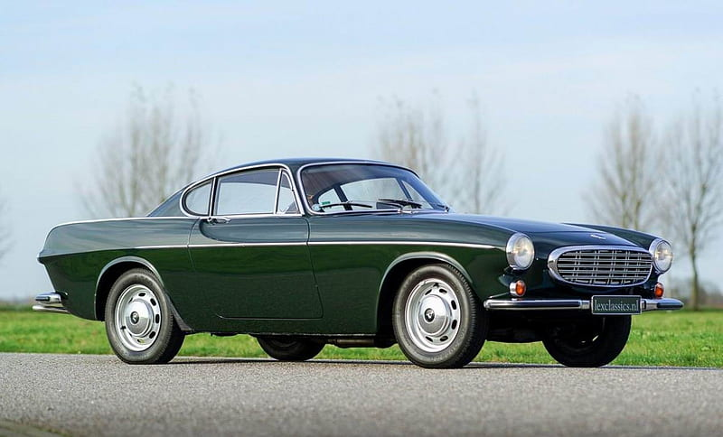
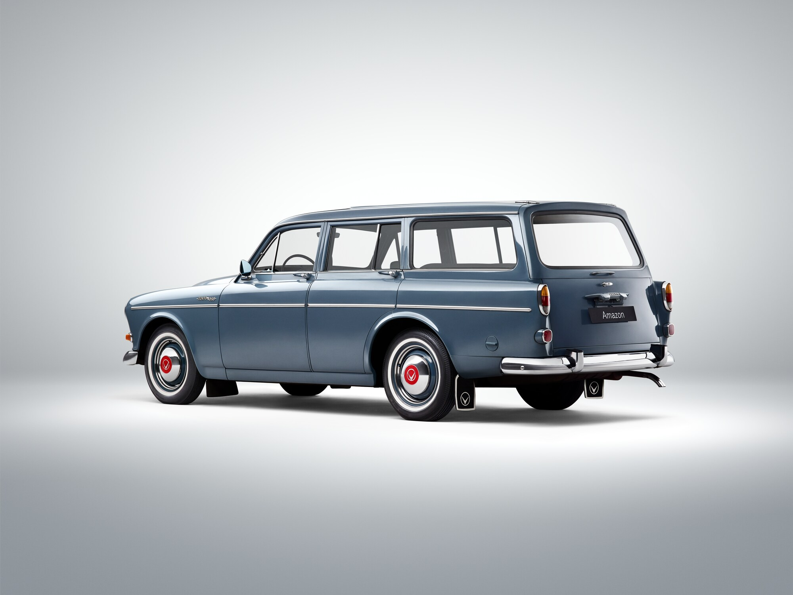
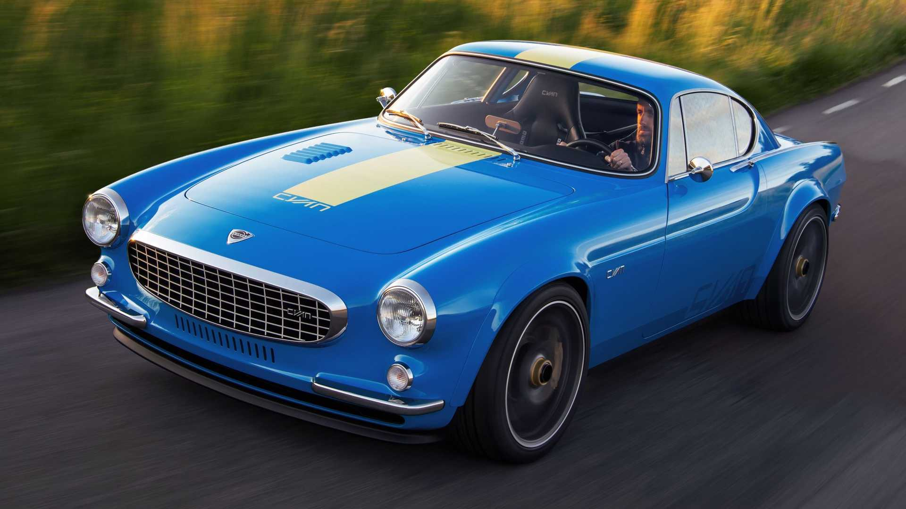
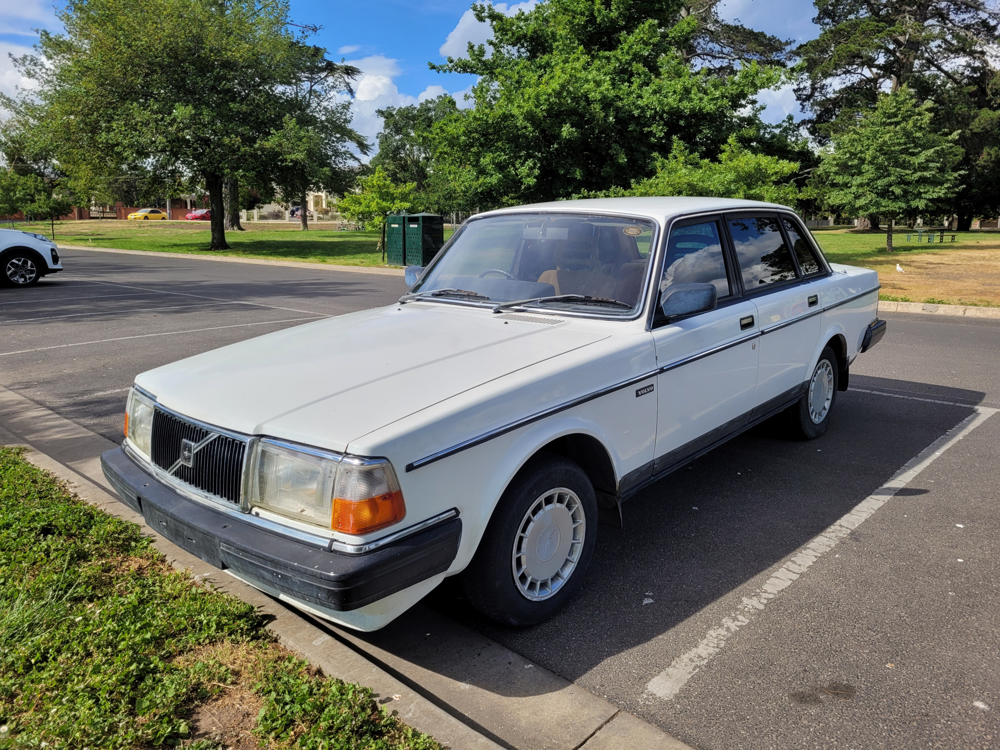